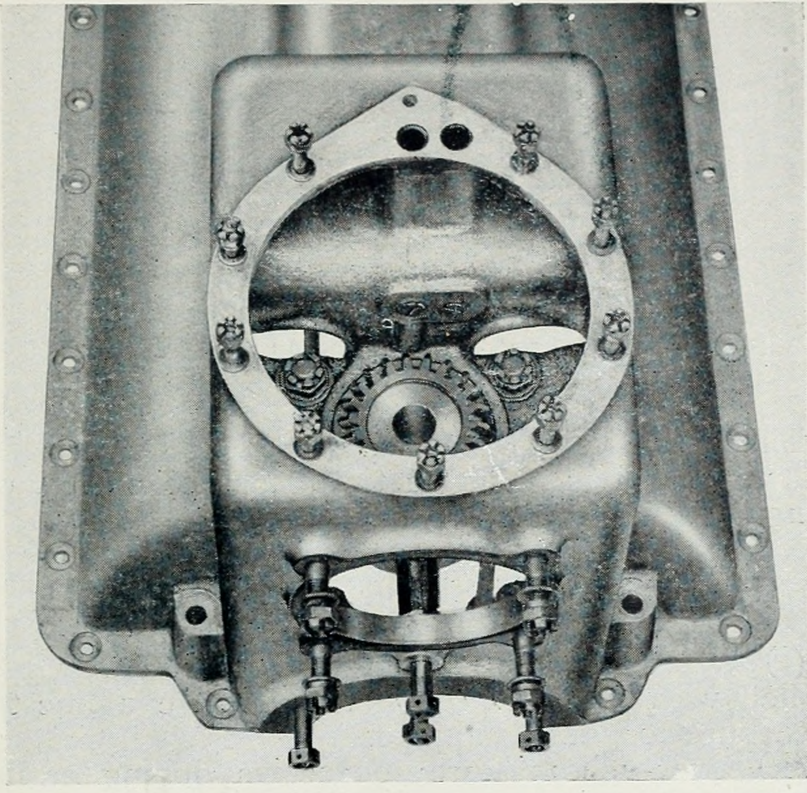
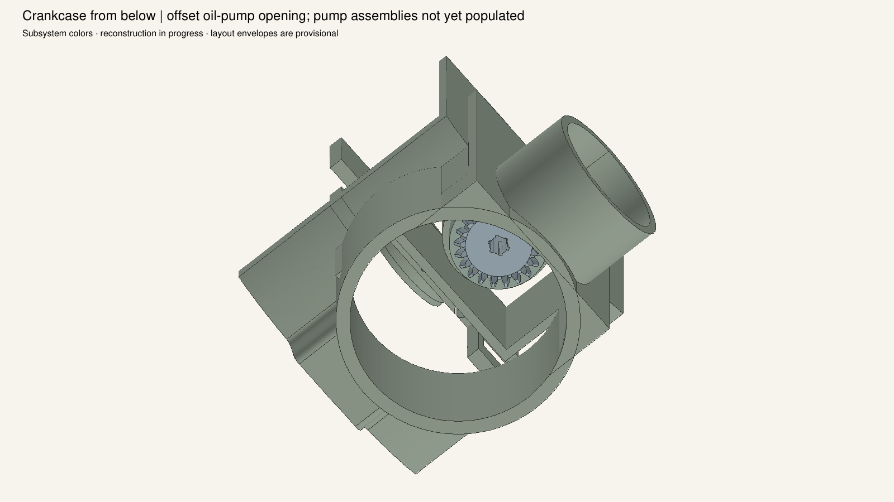
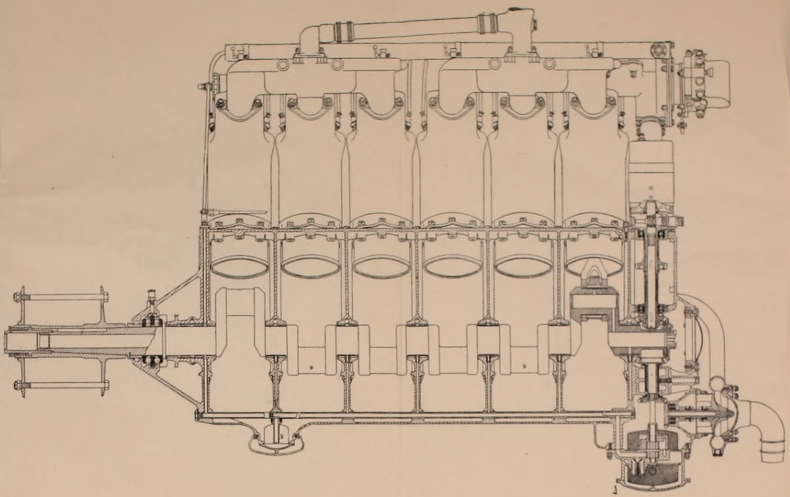
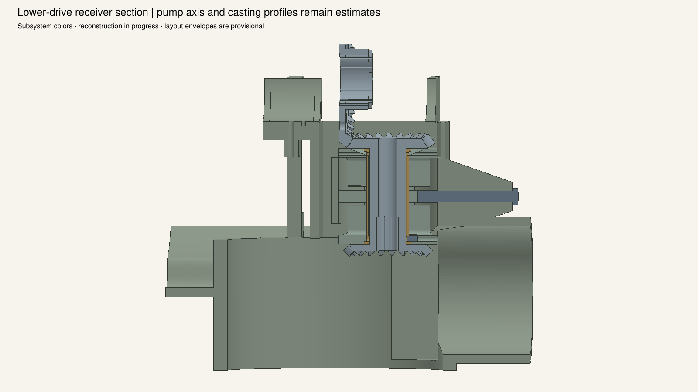
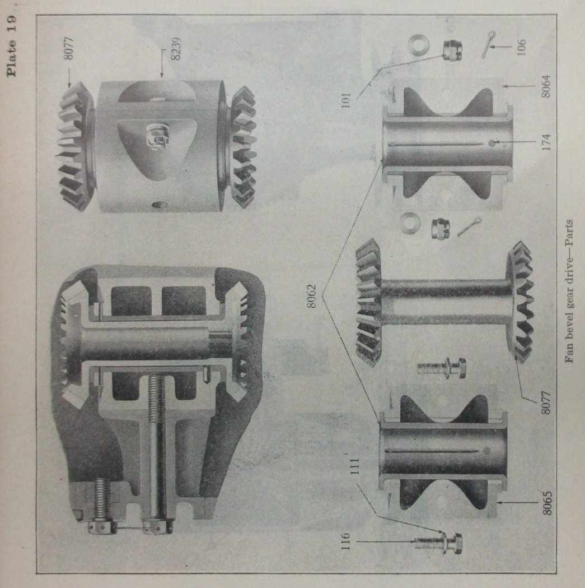
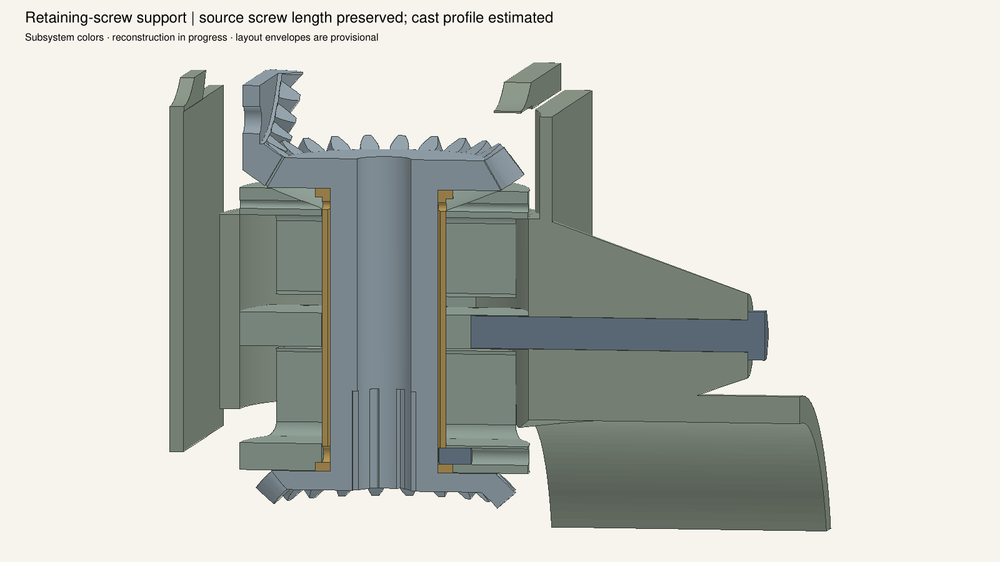
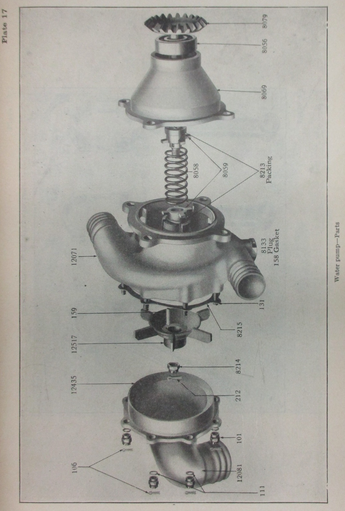
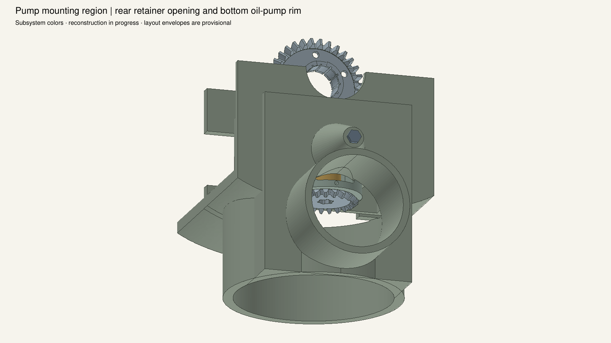
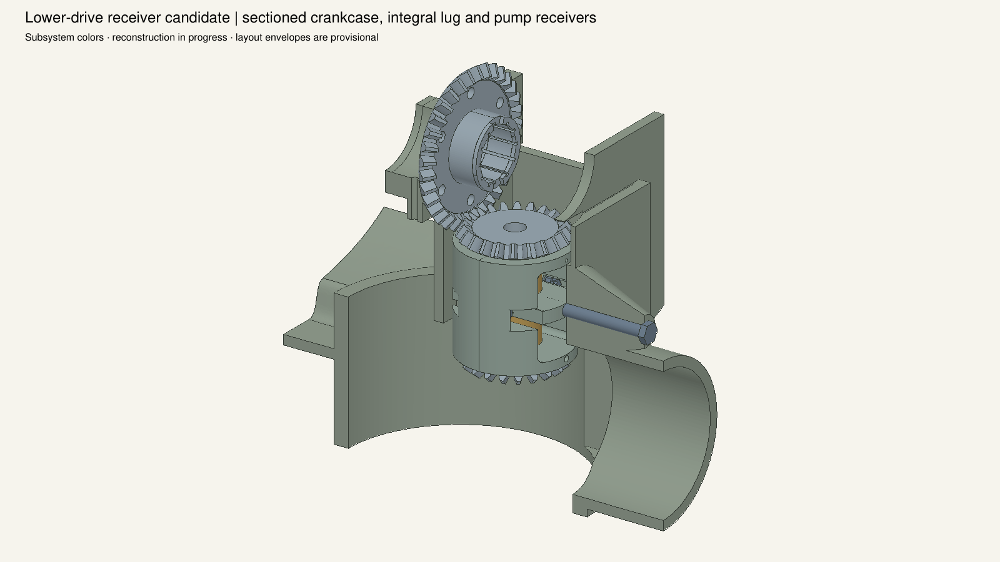
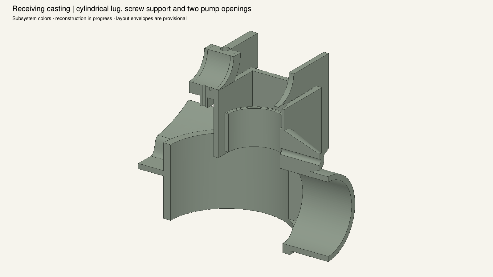

Source views guide form; no camera registration or measured casting profile is claimed. The 184 mm pump-axis drop remains estimated. Pump internals, mounting hardware and historical dimensional reconciliation remain pending. Display cuts do not modify the saved model.









